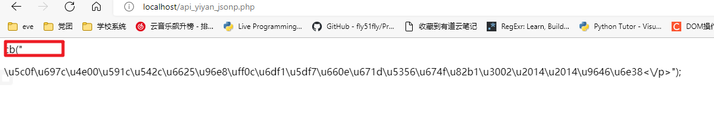
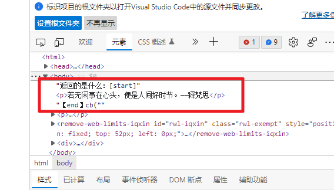
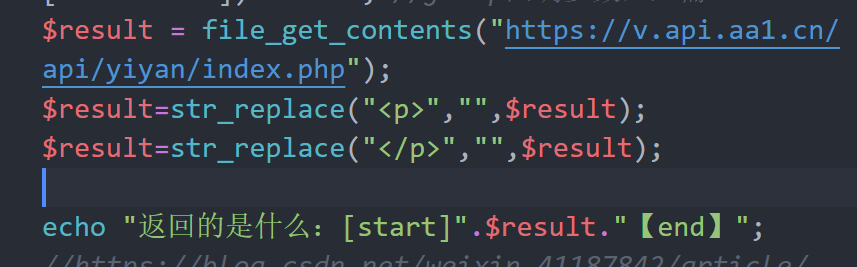
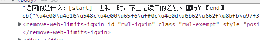
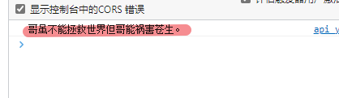
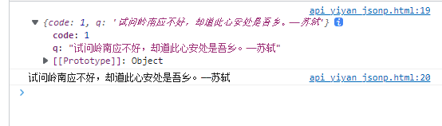
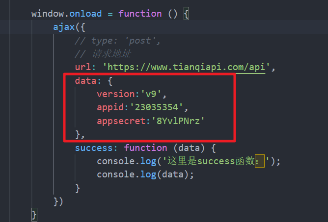
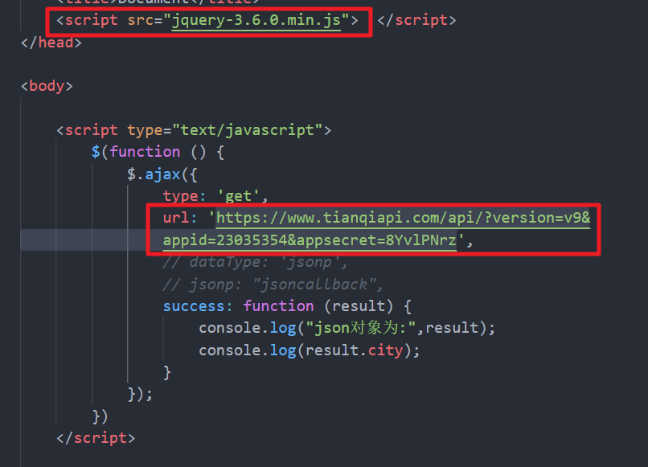

自制接口
Contents
自制用于JSONP的接口
- 特点
- 回调函数
- JSON数据
- 参照
php接口代码
-
$callback = isset($_GET['callback']) ? trim($_GET['callback']) : ''; //jsonp回调参数，必需 $result = file_get_contents("https://v.api.aa1.cn/api/yiyan/index.php"); $tmp= json_encode($result); //json 数据 echo $callback . '(' . $tmp .')'; //返回格式，必需解释1——回调函数名
-
这里的callback需要通过get方式进行传递，如果不传递则默认为空，可以将其修改为如下：
-
$callback = isset($_GET['callback']) ? trim($_GET['callback']) : 'cb'; -
默认没有传递参数的话 ，回调函数的名称就是cb
解释2——返回数据
- 数据因为没有经过加工，只是普通的html数据
- 
- 从返回内容看，里面应该还有其他特殊代码，继续测试发现里面带有p标签。
- 
- 简单处理一下去除p标签
- 
- 再次测试返回值的情况，已经正常。
- 
-
html调用自制接口
关键代码
-
<script> window.onload = function () { //组装查询地址 var sugurl = "http://localhost/api_yiyan_jsonp.php"; //定义回调函数 cb=function(json){ console.log(json) // console.log(json.q) } //动态添加JS脚本 var script = document.createElement("script"); script.src = sugurl; document.getElementsByTagName("head")[0].appendChild(script); } </script>
测试接口返回情况基本正常
- 
- 控制台中已经可以获取正常的数据。
完善接口数据结构
- 目前返回的数据是纯json字符串，并不是标准的数组对象，因此可以继续完善接口代码。
参照
修改php接口代码
-
$result=array("code"=>1,"q"=>$result); -
将相关数据封装到数组中，并增加了关于接口是否正常的code值。
完整接口代码
-
<?php header("Content-Type:text/html;charset=UTF-8"); date_default_timezone_set("PRC"); $callback = isset($_GET['callback']) ? trim($_GET['callback']) : 'cb'; //jsonp回调参数，必需 $result = file_get_contents("https://v.api.aa1.cn/api/yiyan/index.php"); $result=str_replace("<p>","",$result); $result=str_replace("</p>","",$result); //没有关于code判断代码 $result=array("code"=>1,"q"=>$result); $tmp= json_encode($result); //json 数据 echo $callback . '(' . $tmp .');'; //返回格式，必需 ?>
在html中调用接口
-
cb=function(json){ console.log(json) console.log(json.q) } -

-
可以看到接口数据已经可以正常显示。
html中的完整js代码
-
<script> window.onload = function () { //组装查询地址 var sugurl = "http://localhost/api_yiyan_jsonp.php"; //定义回调函数 cb=function(json){ console.log(json) console.log(json.q) } //动态添加JS脚本 var script = document.createElement("script"); script.src = sugurl; document.getElementsByTagName("head")[0].appendChild(script); } </script>
小结
- 大概总结就是，如果外网提供的api可以直接提供callback回调函数的话，就可以直接使用jsonp进行跨域访问，否则就需要自己服务器中通过后端代码（比如php）进行读取，读取后的数据可以直接ajax（前提是前后端都在同源），也可以通过jsonp进行跨域访问。
公开接口
-
对每日一言接口加工后的新的API接口
-
接口地址：http://virlib.nenu.edu.cn/api_yiyan_jsonp.php
-
返回格式：回调函数（cb)+json数据
-
请求方式：GET
特殊的接口
天气API接口
-
https://www.tianqiapi.com/api/?version=v9&appid=23035354&appsecret=8YvlPNrz
接口特点
- 可以直接实现跨域，不需要本地服务器转换
- 可以直接ajax调用，不用jsonp
原生js调用需要添加data数据
- 在ajax方法中需要对参数进行变换调整：

- 因为ajax封装的函数各异，具体使用的时候还需看函数本身的具体内容。
jquery中的ajax
- 如果使用jquery，则可以直接使用完整的url

- jquery方便，而且库函数标准统一，但因为jquery存活时间很久了，生命力不足。推荐仅作适当了解，自己的代码尽量还是用原生js。